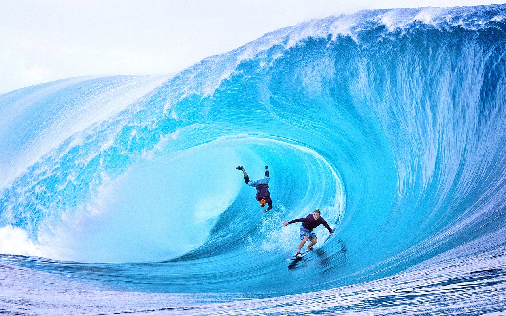

Big Wave Surfing

The bigest wave in the world
- Nazaré, Portugal
- Maui, Hawaii
- Tahiti, French Polynesia
- Tasmania, Australia
- Half Moon Bay, California
The bigest wave in the world

Big wave surfing is a discipline within surfing in which experienced surfers paddle into
, or are towed into,
waves which are at least 20 feet (6.2 m) high, on surf boards known as "guns" or towboards
.[1] Sizes of the board needed to successfully surf these waves vary by the size of the wave as well as the technique the surfer uses to reach the wave. A larger, longer board allows
a rider to paddle fast enough to catch the wave and has the advantage of being more stable
, but it also limits maneuverability
and surfing speed
In 1992, big wave surfers such as Buzzy Kerbox, Laird Hamilton and Darrick Doerner introduced a cross over sport called tow-in
surfing.[4] While many riders still participate in both sports, they remain very distinct activities. This type of surfing involves being towed
into massive waves by jet ski , allowing for the speed needed to successfully ride. Tow-in surfing also revolutionized board size,
allowing surfers to trade in their unwieldy 12 ft. boards in favor of light, 7 ft boards that allowed for more speed and easier maneuvrability in waves over 30 ft (10 meters)
. By the end of the 1990s, tow in surfing allowed surfers to ride waves exceeding 50 ft (15 meters).